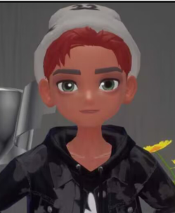
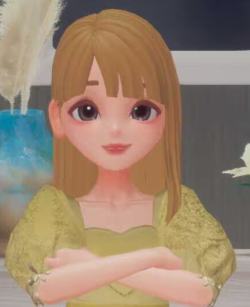

Ana García - Presidenta y Fundadora
Ingeniera informática apasionada por la inteligencia artificial y la realidad virtual. Con una maestría en Innovación Tecnológica, Ana ha liderado varios proyectos innovadores en el campo de la educación digital.
Contribuciones a la Asociación: Ana aporta su experiencia en tecnologías emergentes y liderazgo visionario para guiar a la asociación hacia la vanguardia de la innovación tecnológica y el aprendizaje digital.
Carlos Martínez - Director de Proyectos
Emprendedor serial con una sólida formación en gestión de proyectos. Carlos ha fundado y dirigido startups tecnológicas exitosas. Su enfoque pragmático y su visión estratégica son sus principales activos.
Contribuciones a la Asociación: Carlos lidera la ejecución de proyectos, aplicando su experiencia en desarrollo empresarial para llevar las ideas innovadoras de la asociación a la realidad.

Laura Sánchez - Coordinadora de Eventos

Experta en comunicación y relaciones públicas, Laura ha trabajado en la organización de eventos culturales y científicos. Su pasión por conectar personas a través de experiencias únicas la lleva a explorar continuamente nuevas formas de crear impacto.
Contribuciones a la Asociación: Laura se encarga de diseñar y coordinar eventos que fomentan la colaboración y la creatividad, creando una experiencia única para los miembros de la asociación.